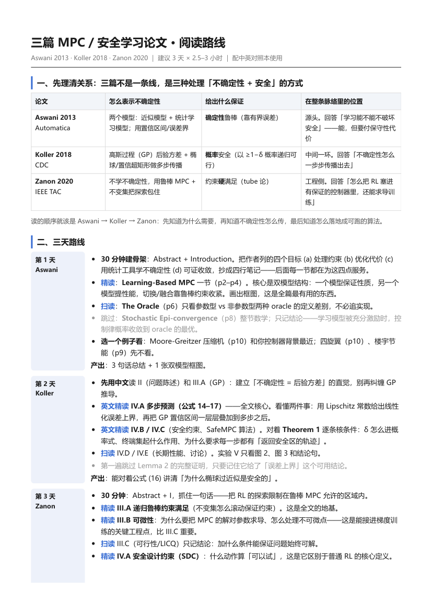

主线三篇
2013 · Aswani — 可证明安全的 LBMPC
源头。回答「学习能不能不破坏安全」——能，但要付出保守性代价。
2018 · Koller — 安全探索与 LBMPC
中间一环。回答「不确定性怎么一步步传播出去」——高斯过程 + 置信区间。
2020 · Zanon — 鲁棒 MPC 与安全强化学习
工程侧。回答「怎么把 RL 塞进有保证的控制器里，还能求导训练」。
对照与路线
Koller 2018 · 中英对照版（24 页）
中文在上、英文小字在下，答辩时快速核对原句用。
三天阅读路线
先读哪篇、跳哪节、每篇的产出要求，附关系总览表。

说明
原文版权归原作者与出版方所有，此处仅作个人学习检索使用，请勿再分发。